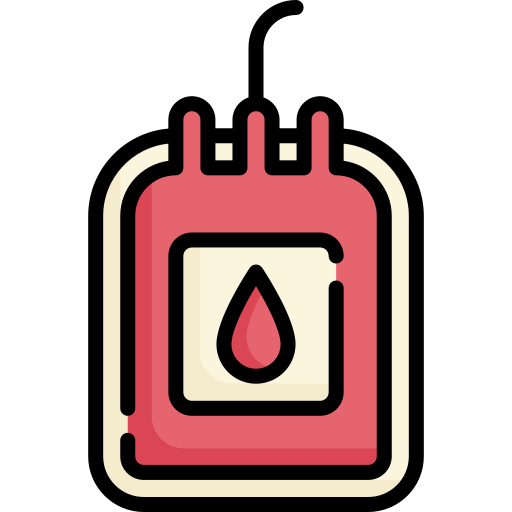

Blood Bridge maps available donors with neighbors and hospitals in real-time. Join our platform to become a lifeline for someone today.

Active Donors
Lives Saved
Partner Hospitals
Avg. Match Time
An efficient, zero-delay engine designed to protect lives and minimize response windows during medical emergencies.
Securely sign up as a verified donor, recipient, or partner medical institution within minutes.
Broadcast an immediate request specifying exact blood criteria, hospital location, and critical window details.
Our engine maps blood types instantly and targets nearby matching donors with dynamic local alerts.
Donors confirm dispatch instantly, establishing seamless parameters between individuals and clinics.
Enter your requirements below to query real-time active lifelines in your immediate geographic radius.
These verified individuals are currently active and ready to assist.
Dhaka, Dhanmondi (1.4 km away)
Last Donated: 4 months ago
Dhaka, Mirpur (3.1 km away)
Last Donated: 6 months ago
Dhaka, Gulshan (4.8 km away)
Last Donated: Available Now